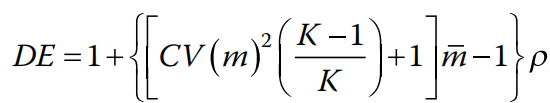
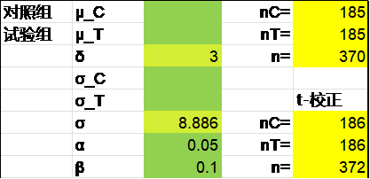
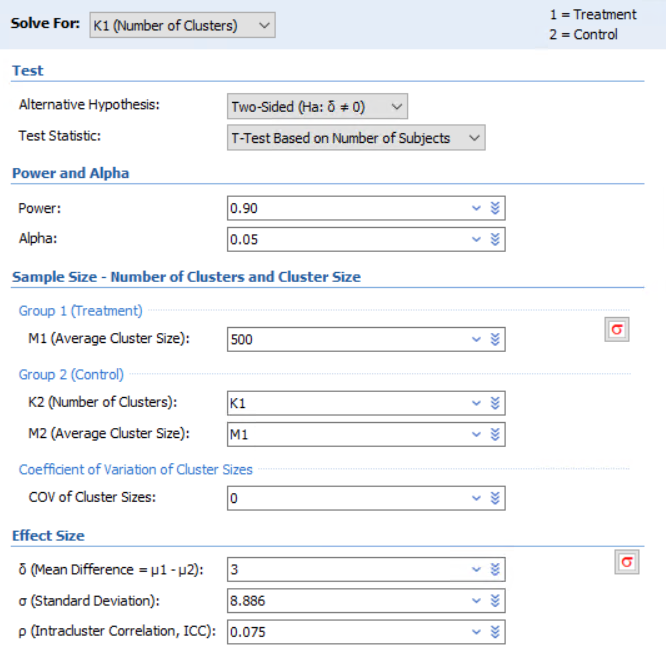
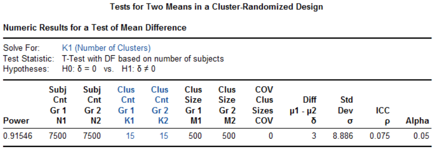
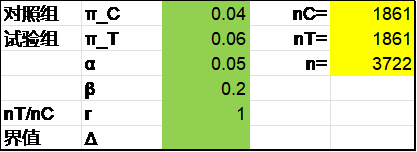
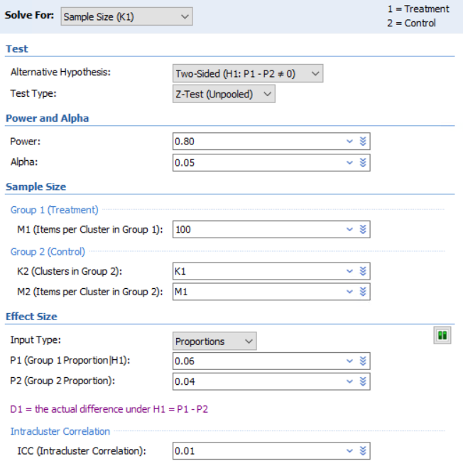
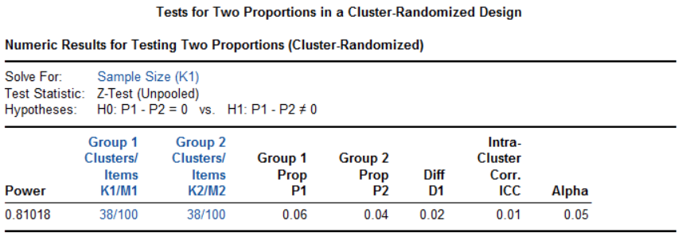

10. 整群随机研究
整群随机研究常见于流行病学（现场）干预研究。一些在学校、社区、乡村等地点开展的行为干预的研究，例如社区防治，如果以群（cluster，一个学校、一个小区、一个自然村等）为随机单位接受一种干预，在研究执行上更可行，也便于设盲，避免不同的处理方案在同一个群内的沾染，因而在人群干预研究中颇受欢迎。同一个群里的个体通常更为相似，其离散程度可用群内标准差σw描述；而群与群之间的差异会相对较大，可用群间标准差σb描述；总的方差σ2=σw2+σb2。整群设计时，群内的相似性降低了个体对研究的贡献，因此样本量也需适当扩增，这个扩增的倍数即方差膨胀因子（variance inflation factor, VIF），亦称设计效应（design effect, DE）。
群内相关系数（intra-cluster correlation coefficient，ICC），或简作ρ，可以描述群内个体的相似程度，计算公式为1：
公式 9‑1 \(\rho = \sigma_{b}^{2}/(\sigma_{b}^{2} + \sigma_{w}^{2})\)
考虑一种简单的情形，有k个群，每个群都有m个个体（每个群的个体数不等时可取平均数，或有时用mmax代替），则设计效应DE的计算公式为：
公式 9‑2 \(DE = 1 + (m - 1)\rho\)
整群设计的总样本量N与不考虑群的影响时的样本量n的关系为：
公式 9‑3 \(N = n \cdot DE\)
2018 Machin

两组均数比较的整群随机设计
例 9‑1 某社区干预试验1考察限盐预防高血压的效果，主要终点为舒张压的下降幅度。既往数据显示人群中舒张压的标准差为8.886mmHg，社区内相关系数为0.075。每个村按500人计算，预计干预1年后试验组较对照组舒张压至少降低3mmHg，设双侧α=0.05，β=0.1，则每组所需的观察例数为7086，每组所需自然村个数为7086/500=14.17，取整为15，总共需30个自然村。
可先计算常规设计所需的样本量，Excel表t-校正法，R语言pwrss包及PASS软件t检验法的结果均为每组186例。然后计算设计效应DE=1+(500-1)X0.075=38.425，最终每组样本量为186X38.425=7147.05，每组所需自然村数为7147.05/500=14.29，取整为15，总共需30个自然村。

library(pwrss)
pwrss.t.2means(mu1 = 3, mu2 = 0, sd1 = 8.886, alpha = 0.05, power = 0.9)
R语言clusterPower包计算如下，每组需15.2个自然村：
library(clusterPower)
cpa.normal(
alpha = 0.05,
power = 0.9,
nclusters = NA,
nsubjects = 500,
d = 3,
ICC = 0.075,
vart = 8.886^2
)
结果输出：
nclusters
15.19699
PASS软件整群设计计算每组需15个自然村。操作时依次点击Cluster-Randomized, Two Means, Test (Inequality), Tests for Two Means in a Cluster-Randomized Design。


两组率比较的整群随机设计
例 9‑2 在以学校为单位进行的学生吸烟率的干预试验中，每个学校随机抽取100名学生，从既往数据估计校内相关系数为0.01。预期试验组与对照组吸烟率分别下降0.06和0.04，则在双侧α=0.05，β=0.2的条件下，每组所需的个体数为3698例，即3698/100=36.98所学校，取38所。
先计算常规设计所需样本量，Excel表独立方差法、R语言pwrss包及PASS软件的结果均为每组1861例。设计效应DE=1+(100-1)X0.01=1.99，因此整群设计时的每组样本量为1861X1.99=3703.39，因此需要3703.39/100=37.03所学校。

library(pwrss)
pwrss.z.2props(p1 = 0.04, p2 = 0.06, alpha = 0.05, power = 0.8)
R语言clusterPower包计算如下：
library(clusterPower)
cpa.binary(
alpha = 0.05,
power = 0.8,
nclusters = NA,
nsubjects = 100,
CV = 0,
p1 = 0.06,
p2 = 0.04,
ICC = 0.01
)
结果输出：
nclusters
38.00233
PASS软件整群设计计算每组需38所学校。操作时以此点击Cluster-Randomized, Two Proportions, Test (Inequality), Tests for Two Proportions in a Cluster-Randomized Design。


例 9‑3 有研究3在湖南某农村地区评价健康宣教预防寄生虫感染的效果。将学校随机分为健康宣教组和对照组，假设对照组一年感染率为6%，干预措施可降低感染50%。根据既往数据，设计效应为1.1，则1639例样本可提供80%的检验效能。（原文未给出α水平，暂按双侧0.05计算。）
先计算不考虑群影响时的样本量n，Excel表独立方差法、R语言pwrsss包及PASS软件的结果皆为1492，考虑设计效应后为1492x1.1=1641.2。
library(pwrss)
pwrss.z.2props(p1 = 0.03, p2 = 0.06, alpha = 0.05, power = 0.8)
研究实际入组了1934例儿童，其中1718例（38个学校，每个学校入组数量中位数为42）纳入最终分析，试验组的感染率明显低于对照组（4.1%与8.4%，P<0.001）。
讨论
例 9‑1的设计效应接近40，显得有些得不偿失。如果每个村入组100人，则设计效应为8.425，每组需要15.7个自然村，读者可自行比较一下。设计策略上可以考虑总的样本量最小（传统的非整群设计），或者总的的自然村数最小，或者根据实际情况取得平衡。
References:
1. 颜艳, 王彤. 医学统计学. 5版 ed. 北京: 人民卫生出版社; 2020.
2. Katzmarzyk PT, Martin CK, Newton RJ, et al. Weight Loss in Underserved Patients - A Cluster-Randomized Trial. NEW ENGL J MED 2020;383:909-18.
3. Bieri FA, Gray DJ, Williams GM, et al. Health-education package to prevent worm infections in Chinese schoolchildren. NEW ENGL J MED 2013;368:1603-12.